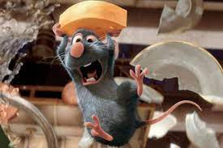

Ratatouille
¡Bienvenido a Ratatouille, donde la magia culinaria cobra vida! 🎉 Aquí,
cada platillo es una obra de arte inspirada en los sabores únicos
de la gastronomía francesa. Nuestro equipo, apasionado por la cocina,
está listo para ofrecerte una experiencia inolvidable en cada bocado.
Siéntete como en casa, relájate y prepárate para disfrutar de una comida que despertará todos tus sentidos. Bon appétit y que comience esta deliciosa aventura. ¡Nos alegra que estés aquí! 🥖🍷